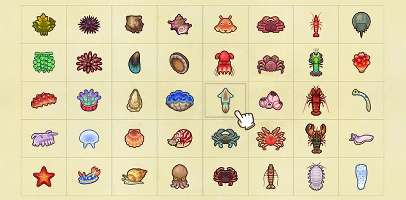

Criaturas marinas
Las criaturas submarinas, también conocido como crustáceos o moluscos son un tipo de criaturas coleccionables en Animal Crossing. El jugador puede atraparlo nadando en el océano usando un Traje buceo y sumergiéndose cuando se encuentre directamente sobre una sombra, o nadando bajo el agua.
El tamaño de las sombras varía desde tan pequeño como el Camarón Boreal y hasta tan grande como el Isópodo Gigante.
Al igual que los Bichos y Peces, pueden ser donados al Museo al hablar con Sócrates, quien luego los exhibirá en la sección de criaturas submarinas.
